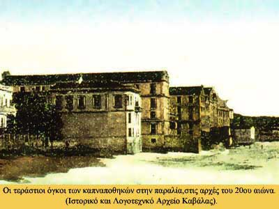

|

[…] Η παραθαλάσσια σειρά των καπναποθηκών είναι ήδη διαμορφωμένη από το τέλος του 19ου αιώνα. Οι καπναποθήκες της εποχής αυτής είναι πολύ μεγαλύτερες από τις παλιότερες, κτισμένες ομοίως με πέτρα και ξύλο, στεγασμένες όμως με δύο ή περισσότερες ξύλινες δίρριχτες στέγες. Χαρακτηρίζονται από τα πολλά συμμετρικά ανοίγματα και από τα τριγωνικά αετώματα των στεγών τους που συχνά φέρουν φεγγίτες ορθογώνιους ή κυκλικούς. Πολλά παράθυρα υπάρχουν και στις πλάγιες όψεις. Τα μπαλκόνια είναι σπάνια. Ταινίες ορίζουν τα πατώματα και τονίζουν τον οριζόντιο άξονα. Η μορφολογία τους είναι λαϊκή νεοκλασική, αλλά υπάρχουν και εκλεκτικιστικά δείγματα, ενώ σπάνια μερικές αποδίδονται στο γερμανικό νεοκλασσικισμό. Το εσωτερικό τους είναι ενιαίο. Στα πρώτα πατώματα τους αποθηκεύονται τα ανεπεξέργαστα καπνά, αραδιασμένα πάνω σε κρεβαταριές για να αερίζονται και να μη σαπίζουν. Τη φροντίδα αυτών των καπνών έχουν οι στοιβαδόροι, που μεταφέρουν στην πλάτη τους ανεπεξέργαστα δέματα στα σαλόνια της επεξεργασίας κι όταν αυτά γίνουν δέματα, τα μεταφέρουν πάλι στις κρεβαταριές για να στεγνώσουν. Τα σαλόνια βρίσκονται στα τελευταία πατώματα των καπναποθηκών και εδώ γίνεται με το φως της ημέρας, από άντρες και γυναίκες, η επεξεργασία του καπνού. […]
Σαπφώ ¶γγελούδη, «Η Καβάλα ως καπνούπολη», Αρχαιολογία 18 (1986), σ. 49
|
|